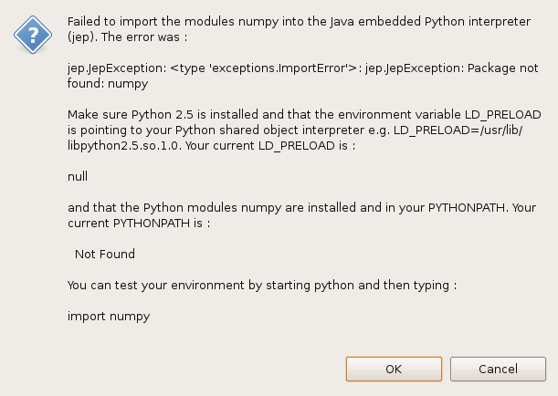

The main problems are :
You need Java 1.5 or later to be installed and in your PATH variable.
Not having Python installed and in your PATH variable. Make sure you can start Python from your standard shell or command window. You can test your Python setup by using Tools -> Python -> Python Information.... It will indicate which modules can be loaded and which can not, as well as give you information on your PATH and PYTHONPATH. The PYTHONPATH can be set in Window -> Preferences -> Python.
If you get this error :

Then the problem could be because
on Linux you do not have LD_PRELOAD not pointing to your Python shared object. The solution is to define LD_PRELOAD and start ImageViewer again.
on MacOSX you have to have a smybolic link from libjep.dylib
to /Library/Java/Extensions. You can do this like this :
sudo ln -s $IMAGEVIEWER_HOME/plugins/jep_2.0.1/lib/macosx/libjep.dylib
/Library/Java/Extensions/libjep.jnilib
on Windows, Linux or MacOS this can happen because you do not have the python package listed in the window installed. You need the following Python packages installed – NumPy and PIL. This should also be packaged with fable.ImageViewer in $IMAGEVIEWER_HOME/python/$platform
If the package not found is fabio then probably PYTHONPATH
is not correctly positioned before starting ImageViewer. PYTHONPATH must
contain the following :
$IMAGEVIEWER_HOME/python/fabio/$platform/
where $platform is one of win32, linux, or macosx.
If you are an expert user you can set PYTHONPATH to point to your local
copy of Fabio.